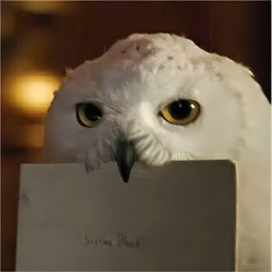
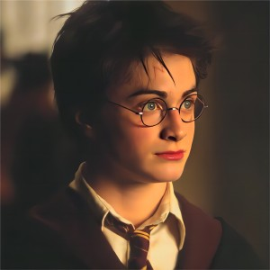

专辑封面 |
系列电影《哈利波特》主题曲曲名：《Hedwig's Theme》作曲：John Williams 歌手：The City of Prague Philharmonic Orchestra 类型：纯音乐 |

哈利波特 |
1.Prologue 2.Hedwig's Theme 3.Harry's Wondrous World 4.The Arrival of Baby Harry 5.Visit to the Zoo/Letters from Hogwarts 6.Diagon Alley/Gringotts Vault 7.Platform Nine-And-Three-Quarters/Journey to Hogwarts 8.Entry into the Great Hall/Banquet 9.Mr.Longbottom Flies 10.Hogwarts Forever!/Moving Stairs 11.The Norwegian Ridgeback; A Change of Season 12.The Quidditch Match 13.Christmas at Hogwarts |
14.The Invisibility Cloak/Library Scene 15.Fluffy's Harp 16.In the Devil's Snare/Flying Keys 17.The Chess Game 18.The Face of Voldemort 19.Leaving Hogwarts 20.Fawkes the Phoenix 21.The Chamber of Secrets 22.Gilderoy Lockhart 23.The Flying Car 24.Knockturn Alley 25.Introducing Colin 26.The Dueling Club |